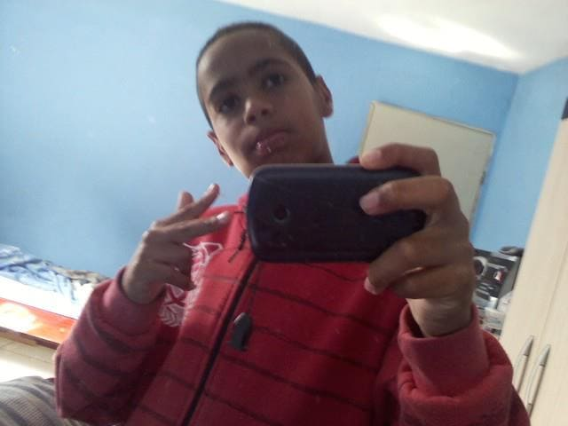
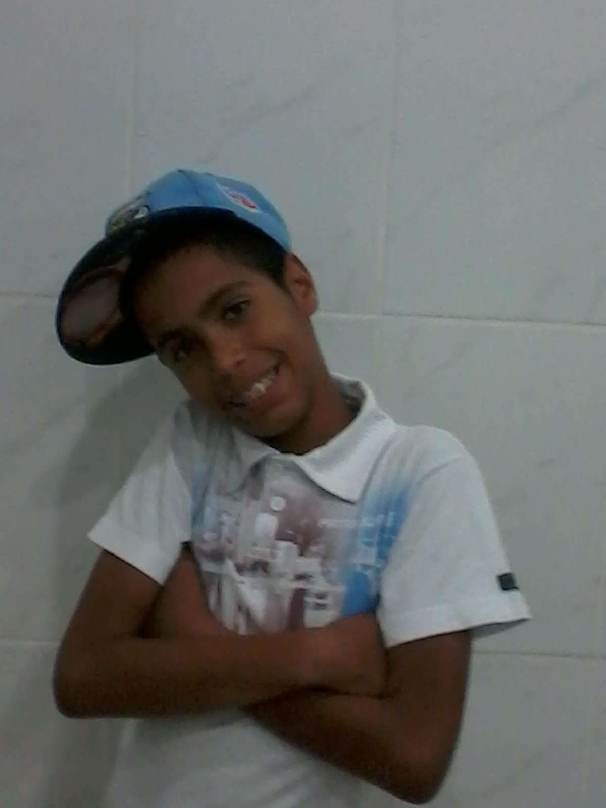
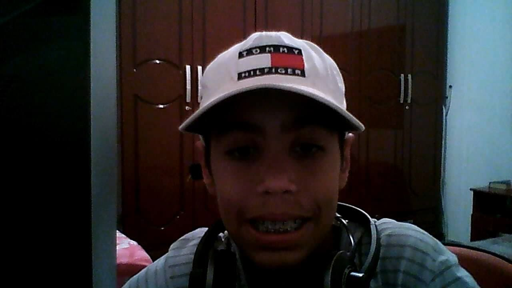
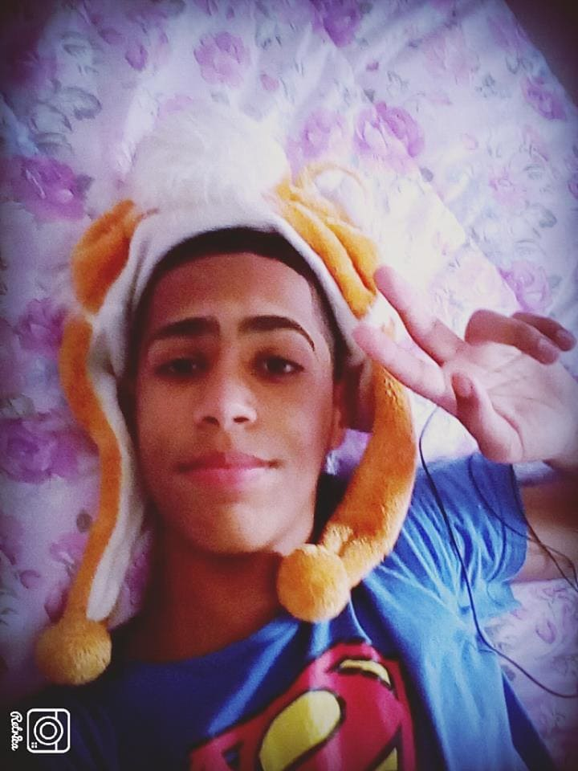
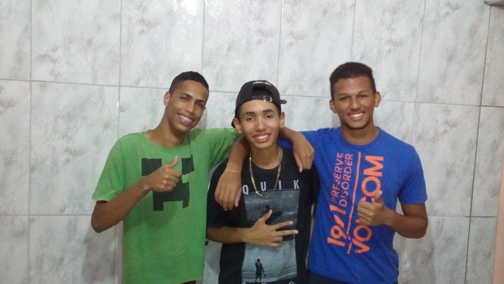

Primeira foto na Web

Essa foi a minha primeira foto postada na Web. Naquele modelo 2012 😎✌, nessa época eu não sorria muito porquê tinha vergonha do meu sorriso. A adolescência é a melhor/pior fase da vida KKKKK.
13 Anos
Aqui eu tinha acabado de colocar o aparelho e tava felizão(O pai já deu aquela moral na auto-estima,KKKKKK se liga na pose do menor.)

Eu aos 14 Anos

Aqui eu tinha acabado de ganhar um PC com Webcam. KKKKKK já fui tirar uma foto na câmera de resolução horrível; Mas tava nem ai, só queria jogar DDTank e Minecraft. Nessa época eu tinha acabado de conhecer minha primeira paixão, tempo bom.
Eu de touquinha de leão
Sim ! Eu já usei touquinha de leãozinho :3 e camisa do SuperMan KKKKKKKK. Aqui eu tinha uns 15 anos... Foi a melhor fase da minha adolescência.

Eu e os parceiros

Uma lembrança muito boa com meus amigos em meados de 2016. (Eu tava com a camiseta do Creeper mano) KKKKKKKKK.